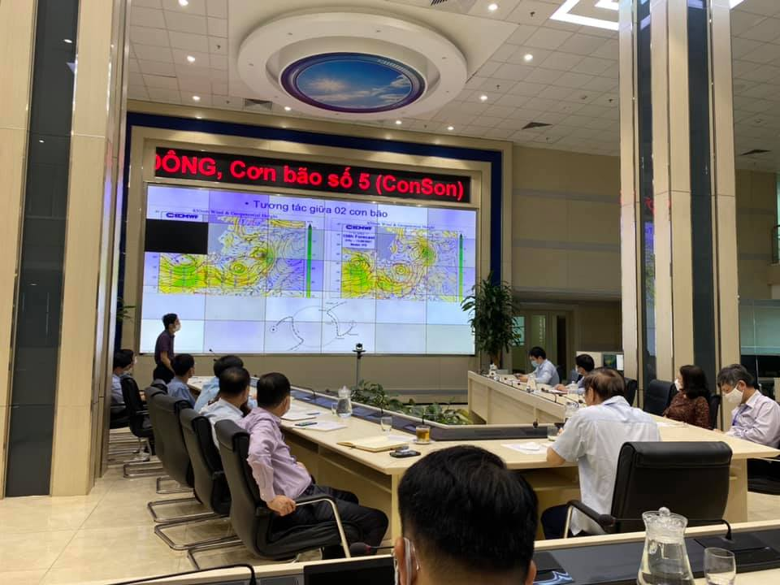

Ngày 25/9/2021, Ban Chấp hành Trung ương Đảng Cộng sản Việt Nam đã ban hành Chỉ thị số 10-CT/TW về tăng cường sự lãnh đạo của Đảng đối với công tác khí tượng thủy văn đáp ứng yêu cầu xây dựng và bảo vệ Tổ quốc.
Họp trực tuyến về công tác dự báo bão
Trải qua 76 năm xây dựng và phát triển, ngành Khí tượng thủy văn, công tác khí tượng thủy văn luôn được Đảng, Nhà nước quan tâm, đã đạt nhiều kết quả, đóng góp quan trọng cho phát triển kinh tế - xã hội, bảo đảm quốc phòng, an ninh và phục vụ đời sống của nhân dân. Nhận thức về vai trò, tầm quan trọng của công tác khí tượng thủy văn được nâng cao. Quản lý nhà nước về khí tượng thuỷ văn được tăng cường; hệ thống pháp luật, cơ chế, chính sách từng bước được hoàn thiện. Chất lượng dự báo, cảnh báo khí tượng thủy văn của Việt Nam dần tiệm cận trình độ của các nước tiên tiến trong khu vực và thế giới.
Tuy nhiên, năng lực, chất lượng dự báo, cảnh báo có mặt chưa đáp ứng được yêu cầu của thực tiễn; thông tin, dữ liệu chưa được quản lý đồng bộ, thiếu cơ chế chia sẻ, sử dụng hiệu quả; một số cơ chế, chính sách về khí tượng thuỷ văn chưa sát với thực tế, thiếu tính khả thi. Nguồn lực dành cho công tác khí tượng thủy văn còn hạn chế; cơ sở vật chất, trang thiết bị, phương tiện chưa được đầu tư, nâng cấp kịp thời.
Nguyên nhân chủ yếu là do nhận thức của một số cấp uỷ, tổ chức đảng, chính quyền về công tác khí tượng thủy văn chưa đầy đủ, thiếu thống nhất; năng lực, trình độ của cán bộ, công chức, viên chức, người lao động làm công tác khí tượng thủy văn chưa đồng đều, chưa làm chủ được một số công nghệ hiện đại; tổ chức bộ máy, quản lý nhà nước và việc phân công, phân cấp, phối hợp giữa các ban, bộ, ngành, địa phương trong công tác khí tượng thủy văn còn thiếu chặt chẽ, chưa hiệu quả; công tác thanh tra, kiểm tra, giám sát, xử lý sai phạm chưa được quan tâm đúng mức.
Để nâng cao chất lượng, hiệu quả công tác khí tượng thủy văn, đáp ứng yêu cầu xây dựng và bảo vệ Tổ quốc trong tình hình mới; phấn đấu đến năm 2030 ngành Khí tượng thủy văn nước ta đạt trình độ tương đương các nước tiên tiến khu vực Châu Á; Ban Bí thư yêu cầu các cấp uỷ, tổ chức đảng, chính quyền, Mặt trận Tổ quốc Việt Nam, các tổ chức chính trị - xã hội triển khai thực hiện tốt một số nhiệm vụ, giải pháp trọng tâm sau:
1. Đẩy mạnh công tác tuyên truyền, giáo dục, nâng cao nhận thức và trách nhiệm của cán bộ, đảng viên, các tầng lớp nhân dân, nhất là người đứng đầu các cơ quan, tổ chức, doanh nghiệp về vai trò, vị trí, tầm quan trọng của công tác khí tượng thủy văn trong quá trình phát triển kinh tế - xã hội, bảo đảm quốc phòng, an ninh và phục vụ thiết thực đời sống dân sinh. Công tác khí tượng thủy văn là nhiệm vụ quan trọng, cấp thiết, thường xuyên, liên tục, phải có sự quan tâm của cả hệ thống chính trị và toàn xã hội.
Các cấp uỷ, tổ chức đảng, chính quyền tập trung lãnh đạo, chỉ đạo nâng cao chất lượng, hiệu quả của công tác khí tượng thủy văn trong phạm vi, lĩnh vực, địa bàn mình quản lý, phụ trách. Thông tin, dữ liệu khí tượng thủy văn phải được xác định là cơ sở quan trọng trong quá trình xây dựng và thực hiện các quy hoạch, chiến lược, kế hoạch phát triển kinh tế - xã hội, quốc phòng, an ninh của các cấp, các ngành. Đề cao và phát huy vai trò của công tác khí tượng thủy văn trong dự báo, cảnh báo thiên tai, giám sát, thích ứng với biến đổi khí hậu ở cấp quốc gia, ngành, lĩnh vực và địa phương. Chủ động phòng ngừa, ngăn chặn việc lợi dụng hoạt động khí tượng thủy văn để thu thập thông tin bí mật quốc gia, chống phá ta.
2. Nâng cao năng lực, chất lượng dự báo, cảnh báo khí tượng thủy văn, giám sát biến đổi khí hậu; đẩy mạnh đổi mới sáng tạo, chuyển đổi số, ứng dụng khoa học - công nghệ tiên tiến; hoàn thiện phương pháp, quy trình dự báo, cảnh báo thiên tai, biến đổi khí hậu, bảo đảm cung cấp đầy đủ, kịp thời thông tin, dữ liệu khí tượng thủy văn, đặc biệt là thông tin, dữ liệu về nguy cơ xảy ra các hiện tượng khí tượng thủy văn nguy hiểm, bất thường có thể ảnh hưởng hoặc gây thiệt hại về người, tài sản và môi trường với độ tin cậy chính xác cao.
Chú trọng đầu tư, nâng cấp kết cấu hạ tầng, trang thiết bị, phương tiện phục vụ cho công tác khí tượng thủy văn theo hướng hiện đại, đồng bộ, tự động hoá, tích hợp đa mục tiêu. Rà soát, hoàn thiện quy hoạch hệ thống mạng lưới trạm quan trắc khí tượng thủy văn quốc gia và trạm khí tượng thủy văn chuyên dùng của các bộ, ngành, địa phương bảo đảm tính thống nhất, đồng bộ và hiệu quả; ưu tiên phát triển tại các khu vực thường xuyên xảy ra thiên tai, chịu tác động lớn của biến đổi khí hậu, khu vực ven biển, biển, đảo, quần đảo thuộc chủ quyền, quyền chủ quyền của Việt Nam. Xây dựng định mức, tiêu chuẩn phục vụ công tác quản lý, vận hành, bảo dưỡng hệ thống trạm khí tượng thủy văn.
3. Tiếp tục hoàn thiện hệ thống pháp luật về khí tượng thủy văn, bảo đảm điều chỉnh toàn diện các đối tượng, phạm vi, loại hình hoạt động có liên quan. Quy định cụ thể việc sử dụng, chia sẻ và kết nối liên thông thông tin, dữ liệu khí tượng thủy văn giữa các bộ, ngành, địa phương và quốc tế; có chế độ, chính sách thoả đáng đối với cán bộ, công chức, viên chức, người lao động làm công tác khí tượng thủy văn, nhất là ở những vùng khó khăn. Tăng cường công tác thanh tra, kiểm tra, giám sát, kịp thời phát hiện và xử lý nghiêm các cơ quan, tổ chức, cá nhân vi phạm quy định pháp luật về khí tượng thủy văn.
4. Củng cố tổ chức bộ máy quản lý nhà nước về công tác khí tượng thủy văn, gắn với đổi mới phương thức hoạt động hiệu quả; phân công, phân cấp, xác định rõ trách nhiệm cụ thể của từng cơ quan, tổ chức liên quan, nhất là người đứng đầu. Có lộ trình, phương án phù hợp để đẩy mạnh cơ chế tự chủ đối với các đơn vị sự nghiệp công lập trong lĩnh vực khí tượng thủy văn. Chú trọng công tác đào tạo, bồi dưỡng nâng cao năng lực, trình độ của đội ngũ cán bộ, công chức, viên chức, người lao động làm công tác khí tượng thủy văn, bảo đảm chuyên nghiệp, đáp ứng tốt yêu cầu nhiệm vụ. Có hình thức phù hợp để phổ biến kiến thức cơ bản về khí tượng thủy văn cho học sinh phổ thông và học viên các lớp đào tạo, bồi dưỡng lý luận chính trị, quốc phòng, an ninh.
5. Phát huy vai trò, trách nhiệm của bộ quản lý chuyên ngành trong việc huy động, quản lý, sử dụng hiệu quả các nguồn lực. Kết hợp nguồn lực từ ngân sách nhà nước với đa dạng hoá các nguồn vốn đầu tư trong nước và ngoài nước, nhất là các nguồn vốn ưu đãi quốc tế cho công tác khí tượng thủy văn. Ưu tiên phân bổ ngân sách nhà nước để bảo đảm duy trì, vận hành hoạt động của mạng lưới trạm quan trắc và công tác dự báo khí tượng thủy văn của quốc gia.
Đẩy mạnh xã hội hoá, thu hút các doanh nghiệp, tổ chức, cá nhân tham gia vào hoạt động khí tượng thủy văn; phát triển mạnh thị trường dịch vụ khí tượng thủy văn đáp ứng nhu cầu của các ngành, lĩnh vực; triển khai một số sản phẩm, dịch vụ khí tượng thủy văn theo phương thức đối tác công - tư.
6. Đẩy mạnh và nâng cao hiệu quả hợp tác quốc tế trong lĩnh vực khí tượng thủy văn, đặc biệt với các quốc gia phát triển, các quốc gia ở thượng nguồn các con sông xuyên biên giới; ưu tiên các hoạt động hợp tác quốc tế trong nghiên cứu phục vụ quan trắc, đo đạc, thám sát, chia sẻ thông tin, dữ liệu khí tượng thủy văn trên Biển Đông. Tăng cường trao đổi thông tin, dữ liệu khí tượng thủy văn, kinh nghiệm với các nước, các đối tác, tổ chức quốc tế nhằm nâng cao năng lực, trình độ, vị thế cho ngành Khí tượng thuỷ văn Việt Nam, với vai trò là trung tâm dự báo khu vực của Tổ chức Khí tượng thế giới. Có kế hoạch đào tạo, cử chuyên gia, đại diện của Việt Nam tham gia vào các cơ quan, tổ chức, diễn đàn điều hành của Tổ chức Khí tượng thế giới và các tổ chức quốc tế khác về khí tượng thuỷ văn.
7. Tổ chức thực hiện Các tỉnh uỷ, thành uỷ, ban cán sự đảng, đảng đoàn, đảng uỷ trực thuộc Trung ương tổ chức nghiên cứu, quán triệt, tuyên truyền, xây dựng chương trình, kế hoạch thực hiện Chỉ thị. Đảng đoàn Quốc hội lãnh đạo, chỉ đạo việc rà soát, sửa đổi, hoàn thiện hệ thống pháp luật về khí tượng thuỷ văn và giám sát việc thực hiện. Ban cán sự đảng Chính phủ lãnh đạo, chỉ đạo việc rà soát, sửa đổi, bổ sung các văn bản dưới luật có liên quan đến công tác khí tượng thuỷ văn; quan tâm kiểm tra, giám sát việc thực hiện Chỉ thị. Ban Tuyên giáo Trung ương chủ trì, phối hợp với Ban cán sự đảng Bộ Tài nguyên và Môi trường chỉ đạo công tác tuyên truyền thực hiện Chỉ thị.